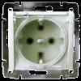

Установить влагозащищенные розетки для ванной комнаты, фото и цены.
Качественный электромонтаж в Санкт-Петербурге и ленобласти, стаж 12 лет. Частный электрик, недорого и качественно.
Телефон - 8 904 642 08 57 Николай.

В последние годы в ванных комнатах появилась в великом множестве полезная электрическая техника - от стиральных машин до ванн-джакузи, которая и способна обеспечить достойный комфорт и удобство в ежедневном пользовании. Но порой безопасность во влажной среде, которая наблюдается в большинстве ванных комнат, может оказаться под большим сомнением. И чтобы купающегося человека ненароком не ударило током, важно устанавливать современные версии влагозащищенных розеток.
Данные виды розеток ценны тем, что способны с легкостью выдерживать случайные брызги воды из лейки душа. Это эффект достигается тем, что их корпус закрывается специальной пластиковой шторкой, которая и служит первым эшелоном защиты от проникновения воды к контактам розетки.
Но порой избыток влаги может просочиться и на подводящие электрические провода. Вторым эшелоном защиты в данном случае будет служить специальная и плотно подогнанная к стенкам розетки резиновая шайба.
Чтобы влагозащищенная розетка не перегревалась и могла прослужить исключительно долгое время, ее рекомендуется выбирать из самого качественного материала. Идеальным выбором окажется огнеупорный пластик европейского качества (ABS-пластик). Но вполне можно купить розетку, корпус которой изготавливается из проверенного карболита.
Сколько стоит монтаж розетки в ванную?
|
Штробление стен. |
Погонный метр от 200 руб. |
|
Монтаж розетки. |
Штука 250 руб. |
.jpg)
Оба вышеуказанных материала ценны тем фактом, что с легкостью выдерживают самые сильные термоудары, если вилка бытового прибора начнет плохо прилегать к клеммам розетки. В этом случае у хозяина жилища окажется время для полного обесточивания всей системы – розетка, несмотря на перегрев, никогда не загорится. Именно поэтому, для ванных комнат не стоит экономить и покупать дешевые розетки из обычного пластика, «ценных» тем, что вначале они плавятся и затем загораются.
Если в ванной комнате устанавливается ванна-джакузи из чугуна или акрила, рекомендуется провести отдельную проводку из медного провода сечением не менее 2 кв./мм. Гидронасосы потребляют много энергии. И поэтому электрический провод тянут непосредственно с электрического щитка. Данный вид работы должен проделывать профессиональный электрик, имеющий допуск на 220 В.
Для получения абсолютной безопасности для всех купающихся людей, профессиональные электрики настоятельно рекомендуют устанавливать влагозащищенную розетку выше уровня головы (на высоте 1.5-1.7 м). Но этого может оказаться мало в плане безопасности – розетка должна быть установлена от лейки душа, как минимум, в 60-70 см.
Только в этом случае можно гарантировать, что случайные брызги от душа никогда не попадут на корпус электрической розетки!
 Поменять проводку в квартире.
Поменять проводку в квартире. Сколько будут стоить материалы.
Карта сайта.
Замена электропроводки в панельном доме.
Расценки на электропроводку квартир.
Замена проводки в хрущевке.
Электромонтаж в частном доме.
Электрика в загородном доме.
Сколько стоит замена электропроводки в двухкомнатной квартире?.
Сколько стоит проложить проводку в 3 ком квартире?
Сколько стоит проложить проводку в четырех комнатной квартире?
Сколько стоит сделать внутреннюю проводку?.
Стоимость штробление стен.
Установка люстр и светильников.
Замена электропроводки в панельном доме.
Электромонтаж проводов в бане.
Электрика в загородном доме